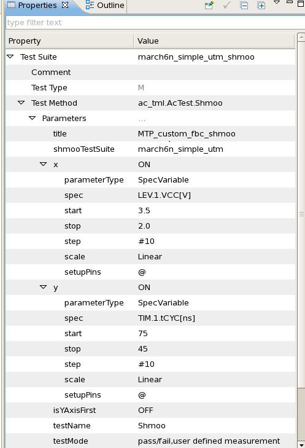

Executing a shmoo test
This section contains an example setup of shmoo over a functional test using the ac_tml.AcTest.Shmoo test method.

For the shmoo plots, you need use the Shmoo Tool to view, see Displaying the results plot of shmoo test suite.
For general information, see Shmoo Tool and Interaction between the Shmoo Tool and testflow.